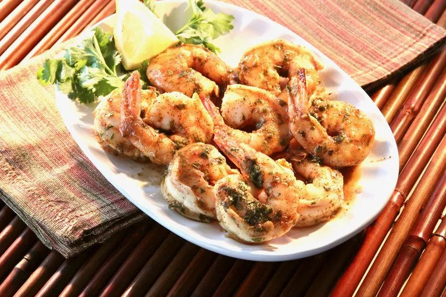

The greatest batch of spicy baked shrimp you will ever have!
Spicy, tangy and crispy these shrimp will make you eat nonstop
Caution: This recipe can be addicting.
Ingredients
- ½ cup olive oil
- 2 tablespoons Cajun seasoning
- 2 tablespoons lemon juice
- 2 tablespoons chopped fresh parsley
- 1 tablespoon honey
- 1 tablespoon soy sauce
- 1 pinch cayenne pepper
- 1 pound uncooked shrimp, peeled and deveined
- Cooking Spray
Recipe instructions (taken from the book)
- Whisk olive oil, Cajun seasoning, lemon juice, parsley, honey, soy sauce, and cayenne pepper together in a large glass or ceramic bowl. Add shrimp and toss to evenly coat. Cover the bowl with plastic wrap and marinate in the refrigerator for 1 hour.
- Preheat the oven to 450 degrees F (230 degrees C). Spray a baking dish with cooking spray.
- Transfer shrimp into the prepared baking dish and pour any remaining marinade over top.
- Bake in the preheated oven until shrimp are bright pink on the outside and the meat is opaque, about 10 minutes.
Return to top
Return to main page